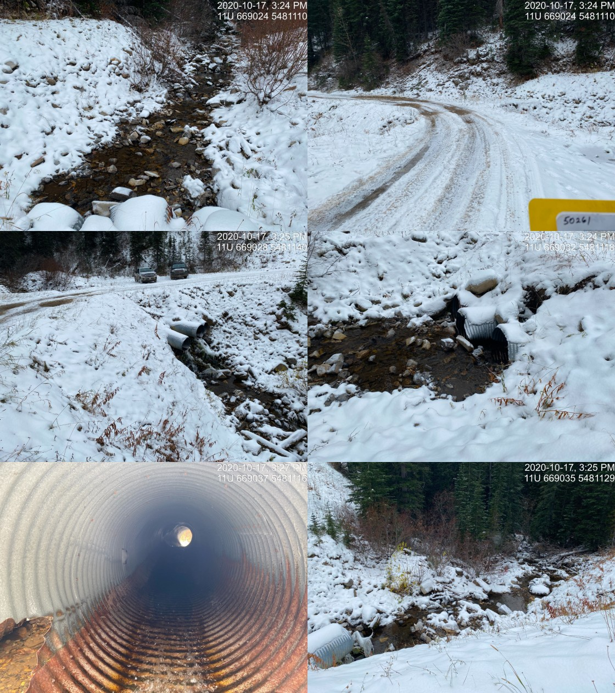

Appendix - Crossing 50261
Flathead FSR - Tributary to Michel Creek
Site Location
Crossing 50261 is located on a tributary to Michel Creek, approximately 210m upstream from the confluence with the Michel Creek. The crossing is located at 7.6km on the Flathead FSR accessed from Coal Mountain.
Background
At the crossing location, the stream is third order with a watershed area upstream of the road of approximately 5.4 km2. The elevation of the watershed ranges from a maximum of 2600 to 1700m at the culvert. There is one crossing modelled downstream of PCSIS 50261 (4600837) and one modelled above (4602097). There was no fisheries information available for the watershed (MoE 2020d, 2020b).
PSCIS stream crossing 50261 was ranked as a moderate priority for follow up with habitat confirmation due to the relatively large amount of potential habitat modelled as suitable for westslope cutthrout trout occupancy (<20% for ~3km) located upstream and a medium habitat value ranking by Grainger (2011). The habitat confirmation was completed on October 17, 2020. A map of the watershed including areas surveyed is provided in Attachment 1 – Map 082G.114.
Stream Characteristics at Crossing
At the time of the survey, the three un-embedded and non-backwatered 2.7m diameter crossings were considered a barrier to upstream fish passage with a pipe lengths of 19m, culvert slopes of 12%, a stream width ratio of 1.7 and outlet drops of 1.8m (Table 5.17). Water temperature was 1\(^\circ\)C, pH was 8.5 and conductivity was 320uS/cm.
Stream Characteristics Downstream
The stream was surveyed downstream from the culvert for 210m. Overall total cover amount was rated as moderate with boulders dominant. Cover was also present as large woody debris, undercut banks, deep pools, and overhanging vegetation (Table 5.18, Figure 5.16). The average channel width was 4.4m, the average wetted width was 2.5m and the average gradient was 15%. The dominant substrate was boulders with cobbles subdominant. Some intermittedt pools were present with occasional pockets of gravel suitable for spawning. A 4.4m high chute was located 200m downstream of crossing (UTM: 11U 668858 5481210) and is considered a permanent impassable barrier to upstream migration (Figure 5.17.
Stream Characteristics Upstream
The stream was surveyed immediately upstream from the culvert for 210m. Overall, total cover amount was rated as moderate with deep pools dominant. Cover was also present as small woody debris, large woody debris, boulders, undercut banks, and overhanging vegetation (Table 5.18, Figure 5.18). The average channel width was 5.2m, the average wetted width was 3.6m and the average gradient was 12%. The dominant substrate was large rock/bedrock with boulders subdominant. Overall, habitat was rated as medium value. There were multiple natural barriers to upstream fish passage within the area surveyed that were considered too steep for upstream migration by any species.
Conclusion
The chute located 200m downstream of PSCIS 50261 is an impassable barrier to upstream migration and negates the value in restoring passage at the crossing. It is recommended that the crossing not proceed to design for remeiation of fish passage at the site.
| Location and Stream Data |
|
Crossing Characteristics | – |
|---|---|---|---|
| Date | 2020-10-17 | Crossing Sub Type | Round Culvert |
| PSCIS ID | 50261 | Diameter (m) | 2.7 |
| External ID | NA | Length (m) | 19 |
| Crew | AI, MF | Embedded | No |
| UTM Zone | 11 | Depth Embedded (m) | NA |
| Easting | 669027 | Resemble Channel | No |
| Northing | 5481115 | Backwatered | No |
| Stream | Tributary to Michel Creek | Percent Backwatered | NA |
| Road | Flathead FSR | Fill Depth (m) | 3 |
| Road Tenure | NA | Outlet Drop (m) | 1.8 |
| Channel Width (m) | 4.6 | Outlet Pool Depth (m) | 0 |
| Stream Slope (%) | 12 | Inlet Drop | Yes |
| Beaver Activity | No | Slope (%) | 12 |
| Habitat Value | Low | Valley Fill | Deep Fill |
| Photos:  |
| Location | Length Surveyed (m) | Channel Width (m) | Wetted Width (m) | Pool Depth (m) | Gradient (%) | Total Cover | Habitat Value |
|---|---|---|---|---|---|---|---|
| Upstream | 220 | 5.2 | 3.6 | 0.6 | 12 | moderate | medium |
| Downstream | 210 | 4.4 | 2.5 | 0.2 | 15 | moderate | medium |
Figure 5.16: Habitat downstream of PSCIS crossing 50261.
Figure 5.17: Chute barrier located 200 downstream of PSCIS crossing 50261.
Figure 5.18: Habitat upstream of PSCIS crossing 50261.